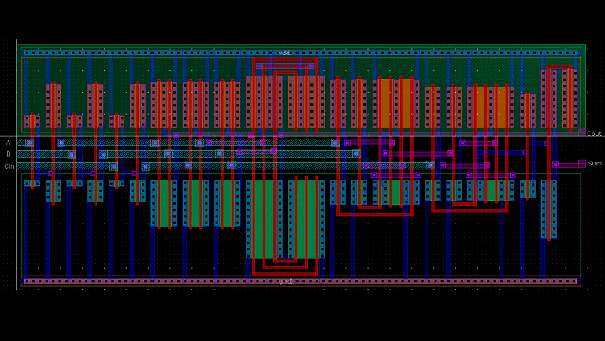
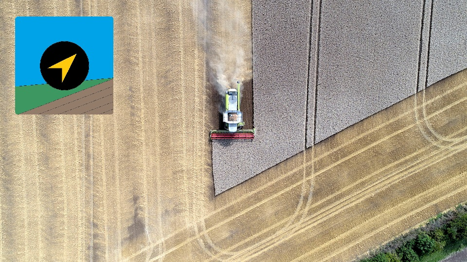

See my work

Learn more about some of my projects that I've done as a student, researcher, and enthusiast.
FINDING YOUR WAY...WHEN YOU CAN'T SEE
How can mobile phones help the blind navigate unfamiliar places?
An Android app that I've helped develop is showing promise for the future of blind navigation.
 "OK GOOGLE - I'M LOST"
"OK GOOGLE - I'M LOST"
Indoor navigation can be difficult when you're in a new place.
IoT can change that. Enter the Smart Sign - a device that extends the Google
Assistant to provide users with custom directions in a building.

CMOS FULL ADDER LAYOUT
How do circuit designers prioritize design parameters like gate sizes and number of stages?
Take a look at my CMOS full adder layout that was built with speed in mind.
MODELING THE EYE WITH A MEMRISTOR
Memristors are often used to model neurons,
but can they be used to model other biological systems like the pupil?
Take a look at my novel memristive model that mimicks pupil diameter in the presence
of changing illumination.

FIELD AUTOMATED ROUTING MODULE (FARM)
How do farmers make sure they fertilize and plant their fields efficiently?
Is there an alternative to complicated GPS units and pricey software?
The open source Android FARM app allows farmers to track their location as they drive their tractor.
They can define the width of their path and even the area of their field.
DIJKSTRA'S ALGORITHM IN WINDOWS
Dijkstra's Algorithm is an essential component in modern graph theory.
Its purpose: finding the shortest weighted distance between nodes.
My C++ implementation and Windows console app make this algorithm very simple to use.
 LaTeX TABLES MADE EASY
LaTeX TABLES MADE EASY
This online web tool makes it easy to convert your Excel data into a
LaTeX table. Just copy your table in Excel and paste it into the text box.
Mutliple formatting options available.
This Website!
Learn a bit about how I made this low-cost website and learn the basic
ideas that you can use to get started yourself.
Education
- 4.0 GPA
- Member of Tau Beta Pi Engineering Honor Society
- Member of Rowan University’s chapter of Cru (formerly Campus Crusade for Christ)
- 4.0 GPA, summa cum laude
- Member of Tau Beta Pi Engineering Honor Society
- Vice President of Rowan University’s chapter of Cru (formerly Campus Crusade for Christ)
- Member of the Institute of Electrical and Electronics Engineers (IEEE) student branch
- Member of the Rowan University Chess Club
Work Experience
Systems Integration and Test Engineer
May 2020 - Present
- Performed regression testing of air traffic management systems
- Used MATLAB to analyze flight arrival time estimations generated by air traffic system algorithms
- Created Bash scripts to automate testing procedures and increase testing efficiency
- Developed a MATLAB program to detect long-term trends in stability test data spanning 3 years
- Wrote and verified problem reports using the Jira agile software development tool
- Authored and implemented risk reduction testing procedures
- And much more to come...
Student Worker
March - June 2020
- Worked in a team to develop a high frequency EMI permafrost detection device for cold regions
- Funded by the U.S. Army Corps of Engineers Cold Regions Research and Engineering Laboratory
Systems Integration and Test Engineer Intern
May - August 2019
- Performed regression testing of air traffic management systems
- Developed software solutions in Java to test the functionality of air traffic management electronic messaging systems
- Authored and implemented risk reduction testing procedures
- Wrote and verified problem reports using the Jira agile software development tool
Researcher
May - July 2018
- Worked in a team of three undergraduate researchers and a graduate student to develop an Android pedestrian navigation app for the blind and visually impaired
-
Researched and tested mobile phone positioning methods by developing a GPS accuracy analysis app for Android
-
Performed an analysis of mobile phone power consumption based on location refresh rates
-
During testing with blindfolded users, the navigation app allowed the user to arrive at their destination over 16% faster than they did when using directions provided by Google Maps
- Funded by the National Science Foundation: Award #1659396
Consulting Role
Software Development Consultant
May 2021 - August 2021
- Performed consulting work in the development of a software tool designed to perform synthetic cannabinoid structure classification by means of a patented procedure
- Used Java to implement the patented refinement algorithm based on GC/FTIR spectrometry data of the bridge carbonyl in vapor phase
- Patent Number: US 10,782,271 B2
Skills and Experience
Programming and Markup
- Java
- C
- C++
- MATLAB
- Verilog HDL
- Bash
- HTML
- JavaScript
- Perl
- LaTeX
- Mathematica
Engineering Skills
- Android app development
- Microprocessor programming
- FPGA programming
- Cadence Virtuoso circuit layout and simulation
- Ansys Maxwell electromagnetic simulations
- Solidworks 3D Design
- 3D printing
- Ubuntu, Red Hat, CentOS
Project Experience
- Built a 64-bit ARMv8 processor in Verilog HDL (team project)
- Completed development of an IoT smart sign designed to aid in indoor navigation with the Google Assistant using the Android Things development platform
- Programmed a TI MSP430 microcontroller to maintain a desired temperature on a heating element using an electric fan controlled by pulse width modulation (team project)
- Completed development of and parametrically analyzed a face identification algorithm in MATLAB using the k-nearest neighbor classifier and discrete cosine transform properties
- Used Cadence Analog Design Environment to create a memristive circuit that models a biological pupil's response to illumination changes
- Designed and simulated a memristive circuit to model the nonlinear biological properties of a pupil
- Designed and created an Android path tracking app to monitor coverage during planting and/or fertilization of a field to maximize efficiency and reduce waste
- Successfully completed the NVIDIA Fundamentals of Deep Learning for Computer Vision course by training and deploying a neural network for image classification
-
Used Verilog HDL to program FPGAs to perform various functions:
- stopwatch with best lap time
- addition and subtraction calculator
- traffic light controller
- binary to hexadecimal converter
- combination lock with adjustable combination
D. Sheppard, N. Felker, and J. Schmalzel, "Development of Voice Commands in Digital Signage for
Improved Indoor Navigation Using Google Assistant SDK," 2019 IEEE Sensors Applications Symposium (SAS), Sophia Antipolis, France, 2019, pp. 1-5.
doi: 10.1109/SAS.2019.8706120
Presentation of Research
Council on Undergraduate Research REU Symposium
Alexandria, VA
October 28-29, 2018
Relevant Coursework
ECE Core
- Computer Architecture
- Computer Science & Programming
- Digital Signal Processing
- Electrical Communications Systems
- Electronics I
- Embedded Systems
- Engineering Electromagnetics
- Intro to Digital Systems
- Modules in ECE (Statistics)
- Principles of Data Structures
- Principles of Electric Circuit Analysis
- Signals & Systems
- Systems & Control I
- VLSI Design
Electives and Graduate Courses
- Advanced Command & Control†
- Advanced Memristors & Nanoelectronic VLSI†
- Advanced Weapon Systems†
- Digital Image Processing
- Intro to Discrete Event Systems
- Intro to Systems Engineering
- Principles of Modern Radar†*
- Rocketronix: Federated Satellites
- Strategic Engineering Management†
- System on a Chip Design†*
Physics and Math
- Calculus I, II, and III
- Intro to Electricity and Magnetism
- Intro to Mechanics
- Math for Engineering Analysis
- Principles of Mechanical Engineering for ECE Majors
* = In Progress
† = Graduate Level